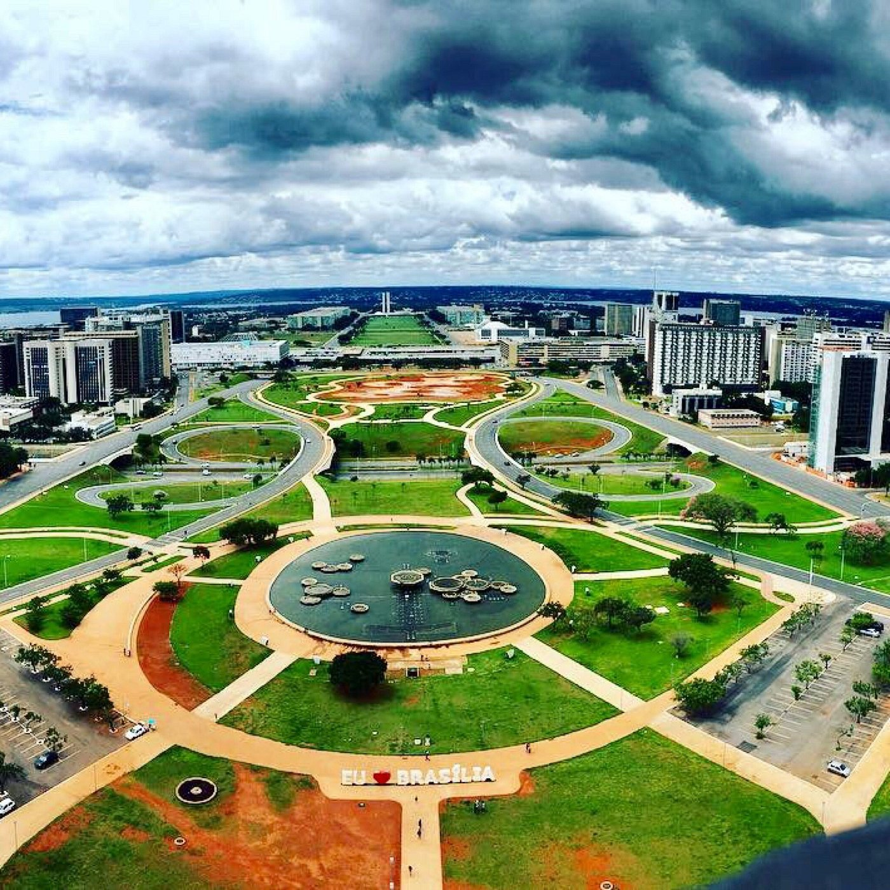
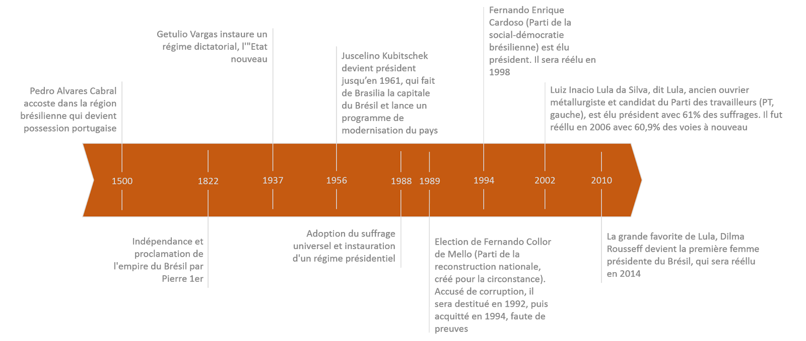

Le Brésil est le plus grand État d'Amérique latine. Désigné comme pays-continent, le Brésil est le cinquième plus grand pays de la planète. Avec une superficie de 8 547 404 km2, le pays occupe la moitié de la superficie de l'Amérique du Sud, partageant des frontières avec l'Uruguay et l'Argentine au sud, le Paraguay au sud-sud-ouest, la Bolivie à l'ouest-sud-ouest, le Pérou à l'ouest, la Colombie à l'ouest-nord-ouest, le Venezuela au nord-ouest, le Guyana au nord-nord-ouest, le Suriname et la France au nord (par la Guyane), soit la plupart des pays du continent sauf le Chili et l'Équateur. Le pays compte 212,6 millions d'habitants en 2024 selon l'estimation officielle. La capitale brésilienne est Brasilia, la ville la plus peuplée est São Paulo suivie par Rio de Janeiro, vitrine internationale du pays. Ancienne colonie portugaise, le Brésil a pour langue officielle le portugais, alors que la plupart des pays d'Amérique latine ont pour langue officielle l'espagnol. La devise du Brésil est Ordem e Progresso (ordre et progrès). Le Brésil, actuellement gouverné par Luiz Inácio Lula da Silva est une république fédérale à régime présidentiel. La monnaie utilisée au Brésil est le real.
Présentation du Brésil


Hymne national
Ouviram do Ipiranga, as margens plácidas
De um povo heróico o brado retumbante,
E o sol da Liberdade, em raios fúlgidos,
Brilhou no céu da Pátria nesse instante.
Se o penhor dessa igualdade
Conseguimos conquistar com braço forte,
Em teu seio, ó Liberdade,
Desafia o nosso peito a própria morte!
Ó Pátria amada,
Idolatrada,
Salve! Salve!
Brasil,
um sonho intenso, um raio vívido
De amor e de esperança à terra desce,
Se em teu formoso céu, risonho e límpido,
A imagem do Cruzeiro resplandece.
Gigante pela própria natureza,
És belo, és forte, impávido colosso,
E o teu futuro espelha essa grandeza
Terra adorada,
Entre outras mil,
És tu, Brasil,
Ó Pátria amada!
Dos filhos deste solo és mãe gentil,
Pátria amada,
Brasil!
II
Deitado eternamente em berço esplêndido,
Ao som do mar e à luz do céu profundo,
Fulguras, ó Brasil, florão da América,
Iluminado ao sol do Novo Mundo!
Do que a terra mais garrida
Teus risonhos, lindos campos têm mais flores;
"Nossos bosques têm mais vida",
"Nossa vida" no teu seio "mais amores".
Ó Pátria amada,
Idolatrada,
Salve! Salve!
Brasil, de amor eterno seja símbolo
O lábaro que ostentas estrelado,
E diga o verde-louro desta flâmula
- Paz no futuro e glória no passado.
Mas, se ergues da justiça a clava forte,
Verás que um filho teu não foge à luta,
Nem teme, quem te adora,
a própria morte!
Terra adorada
Entre outras mil,
És tu, Brasil,
Ó Pátria amada!
Dos filhos deste solo és mãe gentil,
Pátria amada,
Brasil!
Formalité d’entrée
Les Français sont dispensés de visa pour tout séjour inférieur à 90 jours. Le passeport doit avoir une validité de six mois au minimum à partir de la date de retour du voyage. Tout voyageur doit être muni d’un billet de retour ou de sortie du territoire brésilien. Depuis le 12 janvier 2024, le Brésil a modifié sa législation concernant le régime de séjour sur son territoire pour les étrangers. Un ressortissant français peut donc séjourner au Brésil au maximum 90 jours sur une période de 180 jours, sans possibilité de renouvellement. En cas de non-respect de ces dispositions, les voyageurs s’exposent à un refus d’entrée sur le territoire, ou à une obligation de quitter le territoire. Pour plus d’information, veuillez cliquer sur ce lien.
Phrise chonologique du Brésil
